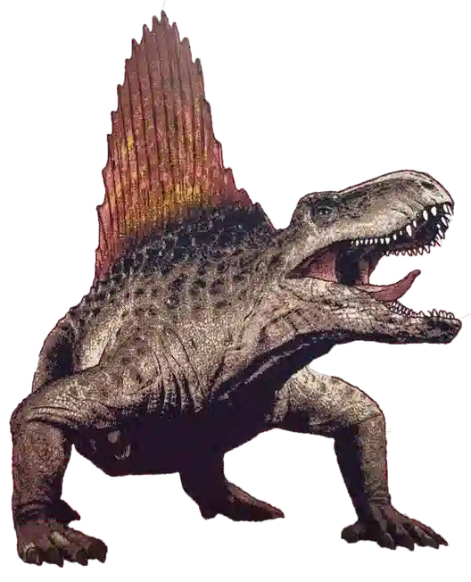

Dimetrodón
Diente de dosmedidas
Teromorfo/Synapsida
Sinápsido carnívoro ubicado en el sur de EE.UU. y Alemania.
Poseía una cresta de forma semicircular que le servía como termorregulador. Se asemeja a los actuales mamíferos, catalogado en el año 1878 y vivió hace 280 millones de años. El Dimetrodón se confunde frecuentemente con un dinosaurio, pero en realidad vivió al menos 40 millones de años antes de la aparición de estos.
Altura: 2m
longitud: 3,2m
Peso: 300Kg
velocidad: 12Km/h
periodo: permico inferior
Especímenes: 40
